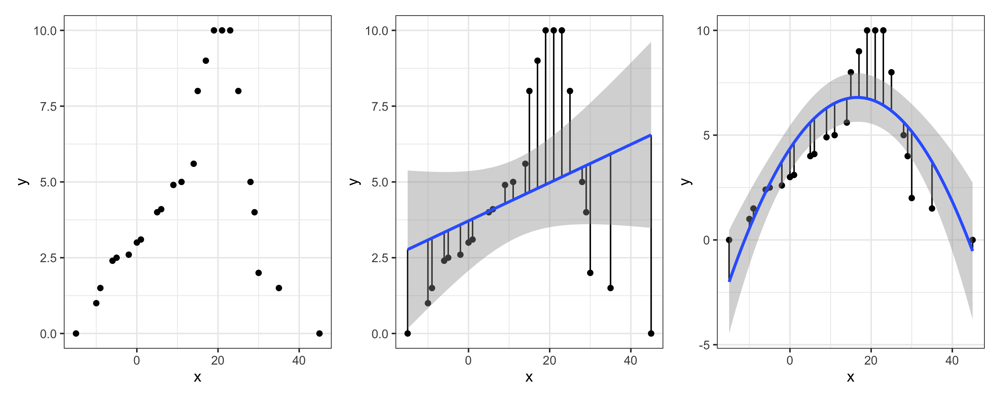
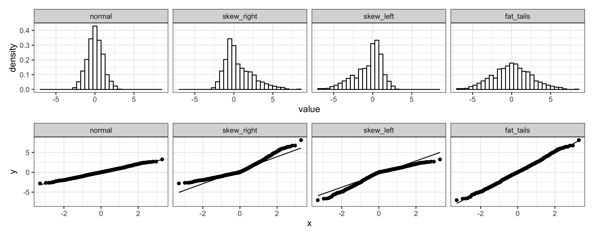
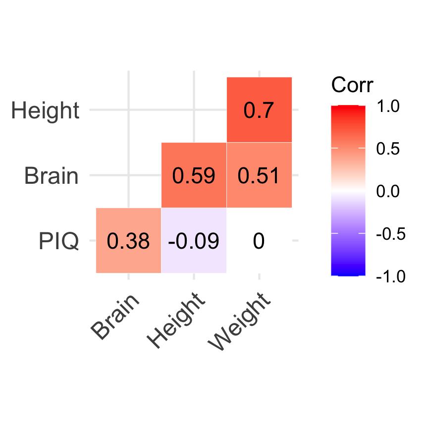
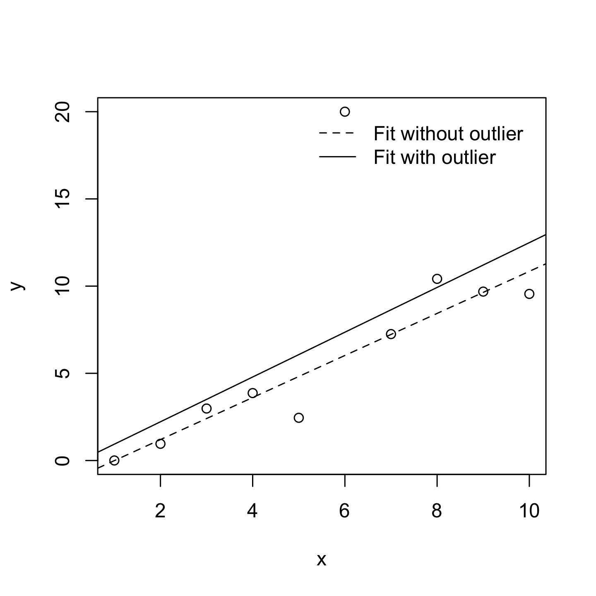
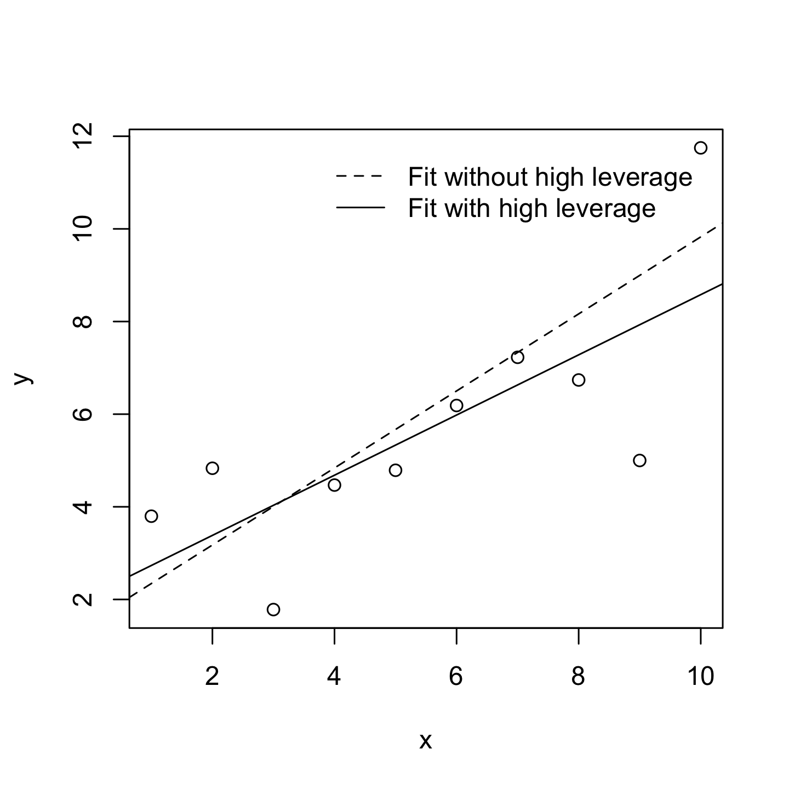
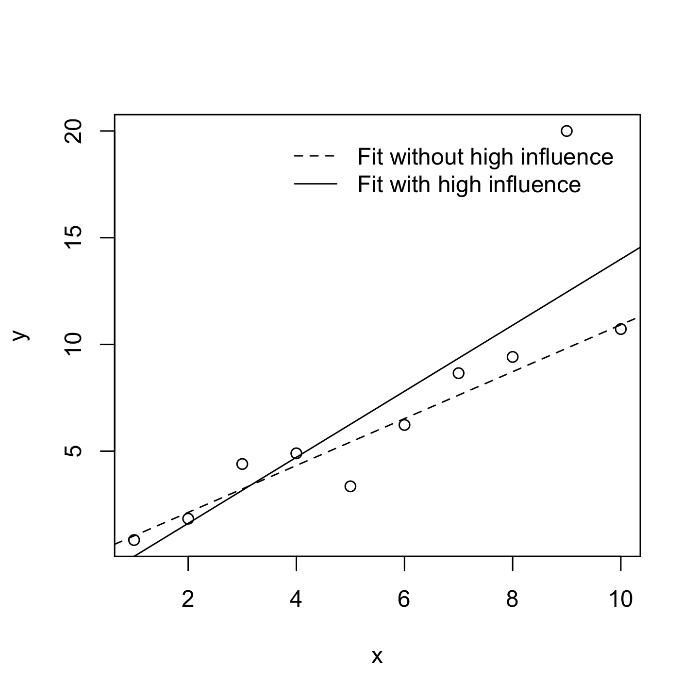

STA1005 - Quantitative Research Methods
Lecture 6: Assumptions of the General Linear Model
Damien Dupré | DCU Business School
1. Assumptions of General Linear Models
Assumptions of GLMs
Statistical tests are widely used to test hypotheses, exactly how we just did but all statistical tests have requirements to meet before being applied.
The General Linear Model has 4 requirements:
1. Linearity (of the effects)
2. Independence (of observations)
3. Normality (of the residuals)
4. Equal Variance (of the residuals)
Assumptions of GLMs
While the assumptions of the Linear Model are never perfectly met in reality, we must check if they are reasonable enough that we can work with them.
Assumptions of GLMs
All assumptions can be checked with Jamovi, except the Independence of observations which is more about self-assessment.
In the Linear Regression options, open Assumption Checks and tick all the boxes.
Some boxes will be used for the additional assumptions (following chapter), but 2 are used to check the main assumptions:
- Q-Q plot of residuals to check the normality of residuals (assumption 3)
- Residual plots to check equal variance of the residuals (assumption 4)
1. Linearity (of the effects)
Assumption 1: Linearity
A pretty fundamental assumption of the General Linear Regression Model is that the relationship between X and Y actually is linear.
To check it in Jamovi, plot the data and have a look:

Assumption 1: Linearity
If the shape of the data is non linear then even the best linear model will have very big residuals and therefore very high \(MSE\) or \(RMSE\).
2. Independence (of observations)
Assumption 2: Independence
To check this assumption, you need to know how the data were collected. Is there a reason why two observations could be artificially related?
For example, an experiment investigating marriage satisfaction according to the duration of the marriage will be flawed if data are collected from both partners. Indeed the satisfaction of one member of the couple should be correlated with the satisfaction of the other member.
Make sure your participants do not know each other or then use the so-called “linear mixed models”.
Assumption 2: Independence
In general, this is really just a “catch all” assumption, to the effect that “there’s nothing else funny going on in the residuals”.
If there is something weird (e.g., the residuals all depend heavily on some other unmeasured variable) going on, it might screw things up.
3. Normality (of the residuals)
Assumption 3: Normality
Like many of the models in statistics, the General Linear Model assumes that the residuals are normally distributed.
Note that it’s actually okay if the predictor and the outcome variables are non-normal, as long as the residuals \(e\) are normal.
Assumption 3: Normality
Three kinds of residuals:
Ordinary residuals: The simple difference between what the model predicted and what was actually observed (called \(e_i\)). Think of it as “how far off was the prediction?” These residuals keep the same units as your variable, so if your predictors use different scales (e.g., salary in euros vs. performance rated 0–10), the residuals will reflect those different scales too.
Standardised residuals: Ordinary residuals converted to a common scale (mean = 0, SD = 1) so you can compare them fairly across variables, even when the original measurements used different units.
Studentised residuals: Similar to standardised residuals, but smarter! They also account for the fact that some data points have more influence on the regression line than others. This makes them the most reliable type for spotting genuine outliers.

Assumption 3: Normality
To check it in Jamovi, use a Q-Q plot

Assumption 3: Normality
- If the residuals are normally distributed, then the line formed by the dots follows the diagonal line (plot 1 and 4)
- If the residuals are skewed right/left, then the line formed by the dots deviates from the diagonal (plot 2 and 3)
4. Equal Variance (of the residuals)
Assumption 4: Equal Variance
Also called Homogeneity or Homoscedasticity, the General Linear Regression Model assumes that each residual \(e_i\) is generated from a normal distribution: the standard deviation of the residual should be the same for all values of the Predictor.
In Jamovi, use Residuals Plot option providing a scatterplot for each predictor variable, the outcome variable, and the predicted values against residuals.
If the Equal Variance is met we should see no pattern in the first plot, only a cloud of points.
With other software, a line is drawn in this residual vs. fitted plot. A flat line would indicate Equal Variance of residuals.

Explicit Assumptions
3 of these assumptions are actually included in the ideal reporting of an equation such as:
\[Y_{i} = b_{0} + b_{1}\,X_{i} + e_{i}\]
\[e_{i} \overset{iid}{\sim} \mathcal{N}(0, \sigma^2_{i})\]
where for each observation \(i\), \(\mathcal{N}\) indicates that residuals are Normally distributed and \(iid\) indicates that these residuals are independent and identically distributed (equal variance).
Live Demo
️ Your Turn!
Test the assumptions of the following linear regression:
\[js\_score = b_{0} + b_{1}\,perf + e\]
1. Linearity (of the effects)
2. Independence (of observations)
3. Normality (of the residuals)
4. Equal Variance (of the residuals)
05:00
2. More Assumptions of General Linear Models
Uncorrelated Predictors
In a multiple General Linear Regression Model, you don’t want your predictors to be too strongly correlated with each other:
- This isn’t technically an assumption of the General Linear Regression Model, but in practice it’s required
- Predictors that are too strongly correlated with each other (referred to as collinearity) can cause problems when evaluating the model
How to check it
- JAMOVI: Regression > Correlation Matrix > Plot Correlation Matrix
Uncorrelated Predictors
Imagine American scientists trying to predict an individual’s IQ by using their height, weight and the size of their brain as follows:
\[IQ = b_0 + b_1\,Height + b_2\,Weight + b_3\,Brain + e\]

Uncorrelated Predictors
Variance Inflation Factors (VIFs) is a very good measure of the extent to which a variable is correlated with all the other variables in the model. A cut off value of 5 is commonly used.
How to check it
- JAMOVI: Regression > Linear Regression: Assumption Checks “Collinearity statistics”
| term | vif | tol |
|---|---|---|
| Brain | 1.58 | 0.63 |
| Height | 2.28 | 0.44 |
| Weight | 2.02 | 0.49 |
No Anomalous Data
Again, not actually a technical assumption of the model (or rather, it’s sort of implied by all the others), but there is an implicit assumption that your General Linear Regression Model isn’t being too strongly influenced by one or two anomalous data points because this raises questions about the adequacy of the model and the trustworthiness of the data in some cases.
No Anomalous Data
Three kinds of anomalous data
- Harmless Outlier Observations
- High Leverage Observations
- High Influence Observations

Harmless Outlier Observations
A “harmless” outlier is an observation that is very different from what the General Linear Regression Model predicts. In practice, we operationalise this concept by saying that an outlier is an observation that has a very large Studentised residual.
Harmless Outlier Observations
A big outlier might correspond to junk data, e.g., the variables might have been recorded incorrectly in the data set, or some other defect may be detectable.
You shouldn’t throw an observation away just because it’s an outlier. But the fact that it’s an outlier is often a cue to look more closely at that case and try to find out why it’s so different.

High Leverage Observations
The second way in which an observation can be unusual is if it has high leverage, which happens when the observation is very different from all the other observations and influences the slope of the linear regression.
High Leverage Observations
This doesn’t necessarily have to correspond to a large residual.
If the observation happens to be unusual on all variables in precisely the same way, it can actually lie very close to the regression line.
High leverage points are also worth looking at in more detail, but they’re much less likely to be a cause for concern.

High Influence Observations
A high influence observation is an outlier that has high leverage. That is, it is an observation that is very different to all the other ones in some respect, and also lies a long way from the regression line.
High Influence Observations
We operationalise influence in terms of a measure known as Cook’s distance.
In Jamovi, information about Cook’s distance can be calculated by clicking Assumption Checks > Data Summary options.
For an observation, a Cook’s distance greater than 1 is considered large. However, Jamovi provides only a summary, check the maximum Cook distance and its average to know if some observations have high influence.

Live Demo
️ Your Turn!
Check if the relationship between \(js\_score\) and \(perf\) has some:
1. Harmless Outlier Observations
- Check the Studentised residuals: are there any observations with values beyond +3 or -3?
2. High Leverage Observations
- Look at the residual plots: are there observations far from the others on the x-axis?
3. High Influence Observations
- Check the Cook’s Distance summary: is the maximum Cook’s distance greater than 1?
05:00
3. Model Selection
First Warning
Warning
Model Selection is also called Hierarchical Linear Regression but is NOT Hierarchical Linear Model.
- Hierarchical Linear Regression compares 2 or more models with fixed effects
- Hierarchical Linear Model compares 2 or more models with random effects (also called Multilevel Model)
Here we are using the term Model Selection for Hierarchical Linear Regression.
Default Model Testing
Imagine you are testing the model that includes the variables \(X\) and \(Z\) have an effect on the variable \(Y\) such as:
\[H_a: Y = b_{0} + b_{1}\,X + b_{2}\,Z + e\]
If nothing is specified, the null hypothesis \(H_0\) is always the following:
\[H_0: Y = b_{0} + e\]
Default Model Testing
But when there are multiple predictors, the \(p\)-values provided are only in reference to this simplest model.
If you want to evaluate the effect of the variable \(Z\) while \(X\) is taken into account, it is possible to specify \(H_0\) as being not that simple such as:
\[H_0: Y = b_{0} + b_{1}\,X + e\]
This is a Model Comparison!
Default Model Testing
Example, imagine a model predicting \(js\_score\) with \(salary\) and \(perf\):
\[js\_score = b_{0} + b_{1}\,salary + b_{2}\,perf + e\;(full\;model)\]
In the Model Fit table of Jamovi, this model will be compared to a null model as follows:
\[js\_score = b_{0} + e\;(null\;model)\]
Default Model Testing
However it is possible to use a more complicated model to be compared with:
\[js\_score = b_{0} + b_{1}\,salary + e\;(simple\;model)\]
Comparing the full model with a simple model consists of evaluating the added value of a new variable in the model, here \(perf\).
Model Comparison
A model comparison can:
- Compare Full Model with a shorter model (called Simple Model)
- Indicates if a variable is useful in a model
This principle is often referred to as Ockham’s razor and is often summarised in terms of the following pithy saying: do not multiply entities beyond necessity. In this context, it means don’t chuck in a bunch of largely irrelevant predictors just to boost your \(R^2\).
Model Comparison
To evaluate the good-fitness of a model, the Akaike Information Criterion also called \(AIC\) (Akaike 1974) is compared between the models:
- The smaller the \(AIC\) value, the better the model performance
- \(AIC\) can be added to the Model Fit Measures output Table when the \(AIC\) checkbox is clicked
Model Comparison in JAMOVI
In Model Builder create Block 1 as your Simple Model and a New Block 2 with the additional predictor.
Model Comparison in JAMOVI
Details of Model 1 (Simple Model) and Model 2 (Full Model):
| model | r | r2 | aic | f | df1 | df2 | p |
|---|---|---|---|---|---|---|---|
| 1.000 | 0.855 | 0.731 | 57.018 | 48.957 | 1.000 | 18.000 | 0.000 |
| 2.000 | 0.860 | 0.740 | 58.372 | 24.157 | 2.000 | 17.000 | 0.000 |
Evaluation of significant difference between the two models:
| model1 | sep | model2 | r2 | f | df1 | df2 | p |
|---|---|---|---|---|---|---|---|
| 1.000 | - | 2.000 | 0.009 | 0.558 | 1.000 | 17.000 | 0.465 |
Here the difference between the two models is not statistically significant, therefore adding \(perf\) in the full model doesn’t help to increase the prediction (as indicated by the \(AIC\)).
Live Demo
️ Your Turn!
Compare the following full model:
\[js\_score = b_{0} + b_{1}\,salary + b_{2}\,perf + b_{3}\,salary*perf + e\]
With:
\[js\_score = b_{0} + b_{1}\,salary + b_{2}\,perf + e\]
Is the addition of the Interaction effect improving the accuracy of the model?
Hint: Compare the \(AIC\) values and check whether the \(p\)-value of the model comparison is significant.
05:00
4. Power Analysis for Sample Size and Effect Size Estimations
Theoretical Principle
Remember, the null hypothesis \(H_0\) is the hypothesis that there is no relationship between the Predictor and the Outcome.
If the null hypothesis is rejected, we accept the alternative hypothesis \(H_a\) of a relationship between the Predictor and the Outcome.
Theoretical Principle
This means that four possible situations can occur when we run hypothesis tests:
- We reject \(H_0\) …
- and in fact \(H_a\) is true. This is a good outcome and one which is most often the motivation for the hypothesis test in the first place (True Positive)
- but in fact \(H_a\) is false. This is known as a Type I error (False Positive)
- We fail to reject \(H_0\) …
- and in fact \(H_a\) is false. This is a good outcome (True Negative)
- but in fact \(H_a\) is true. This is known as a Type II error (False Negative)
Statistical power refers to the fourth situation and is the probability that we are able to detect the effect that we are looking for.
Theoretical Principle

Statistical Power
The ability to identify an effect if it exists (i.e., statistical power) depends at a minimum on three criteria:
- The significance level \(\alpha\) to reject \(H_0\) (usually set at 0.05 or 5%)
- The size \(n\) of the sample being used
- The proportion of the variability of the Outcome variable explained by all the Predictors (i.e., full model), known as the effect size
Statistical Power
The minimum level of statistical power to achieve is usually set at least 0.8 or 80% (i.e., we want at least a 80% probability that the test will return an accurate rejection of \(H_0\)).
If all the criteria are known except \(n\), then it is possible to approximate the \(n\) necessary to obtain at least a 0.8 or 80% power to correctly reject \(H_0\) before running the analysis (prospective power analysis).
It is also possible to evaluate which has been achieved once the analysis has been done (retrospective power analysis).
Sample Size with Prospective Power Analysis
Sample Size Estimation
The main question of most researchers is:
“How many participants are enough to test the formulated hypotheses?”
Some would obtain a random answer from their colleagues such as “at least 100” or “at least 50 per group”.
However, there is an actual exact answer provided by the power analysis:
“It depends on how big the effect size is”
Sample Size Estimation
Prospective Power Analysis is reported in the Method section of research papers in order to describe how the sample size has been estimated thanks to an approximated effect size at the model level (e.g., small, medium, or large).
Sample Size Estimation
The values of the approximated effect size depend on the type of model tested:
- A model with 1 Main Effect of a Categorical Predictor with 2 categories uses Cohen’s \(d\)
- All other models including Main and Interaction Effect involving Categorical Predictor with 3+ categories or Continuous Predictor uses Cohen’s \(f\)
Note
A model with only Main Effects of Continuous Predictors can use a \(f\) or \(f^2\)
Sample Size Estimation
Effect Size Rule of Thumb:
| Effect Size | Small | Medium | Large |
|---|---|---|---|
| \(d\) | 0.20 | 0.50 | 0.80 |
| \(f\) | 0.10 | 0.25 | 0.40 |
| \(f^2\) | 0.02 | 0.15 | 0.35 |
Sample Size Estimation
Power analyses using Cohen’s \(f\) effect size (i.e., all models except the ones using a Cohen’s \(d\)) are calculated with an additional parameter: Numerator df (degree of freedom)
The degree of freedom of each effect is added to obtain the Numerator df:
- In main effects
- Continuous Predictors have 1 df
- Categorical Predictors have k - 1 df (number of categories - 1)
- In interaction effects, the df of the predictors involved are multiplied
Sample Size Estimation
Example:
\[js\_score = b_{0} + b_{1}\,salary + b_{2}\,location + b_{3}\,salary*location + e\]
- \(b_{1}\,salary\) has 1 df (Continuous Predictor)
- \(b_{2}\,location\) has 2 df (3 locations - 1)
- \(b_{3}\,salary*location\) has 2 df (1 * 2)
The model’s Numerator df is 5 (1+2+2)
Note
The number of groups is usually the same as Numerator df
Sample Size Estimation
There are multiple possibilities to perform a power analysis:
- Websites hosted online such as https://powerandsamplesize.com/ or https://sample-size.net (but none are satisfying)
- Embedded in Statistical software such as SPSS or Jamovi (but none are satisfying)
- Specific software such as G*power (free and the most used power analysis software)
- Packages for coding languages (like {pwr} in R or
statsmodelsin python)
Sample Size Estimation
While the last option will be the best solution after being introduced to R, G*power is the most commonly used software and can be downloaded for free here: https://www.psychologie.hhu.de/arbeitsgruppen/allgemeine-psychologie-und-arbeitspsychologie/gpower

Sample Size Estimation
G*power uses 3 characteristics to determine the type of power analysis:
- Test family (e.g., t-test for models with 1 predictor either continuous or having two categories or F-test for all other models)
- Statistical test (e.g., mean comparison, ANOVA, multiple linear regression)
- Type of power analysis (e.g., prospective also called “a priori” or retrospective also called “post hoc”)
Sample Size Estimation
Whatever your model is, for Sample Size Estimation with Prospective Power Analysis use:
- F-tests
- ANOVA: Fixed effects, special, main effects and interactions
- A priori: Compute required sample size - given \(\alpha\), power, and effect size
Applied Example 1
Model Characteristics with \(js\_score\) as Continuous Outcome:
- 1 Main Effect of \(gender\) (Predictor with 2 categories: male and female employees)
Applied Example 1
Statistical Power
- Alpha of 0.05 (5%)
- Power of 0.8 (80% probability of accurately rejecting \(H_0\))
- Effect size of \(d = 0.5\) (medium)
This tells us that we need an absolute minimum of 128 individuals in our sample (64 male and 64 female employees) for an effect size of \(d = 0.5\) to return a significant difference at an alpha of 0.05 with 80% probability.
Applied Example 1

Applied Example 1

Applied Example 2
Model Characteristics with \(js\_score\) as Continuous Outcome:
- 1 Main Effect of \(location\) (Predictor with 3 categories: Irish, French, and Australian)
Applied Example 2
Statistical Power
- Alpha of 0.05 (5%)
- Power of 0.8 (80% probability of accurately rejecting \(H_0\))
- Effect size of \(f = 0.25\) (medium)
This tells us that we need an absolute minimum of 158 individuals in our sample for an effect size of \(f = 0.25\) to return a significant difference at an alpha of 0.05 with 80% probability.
Applied Example 2

Applied Example 3
Model Characteristics with \(js\_score\) as Continuous Outcome:
- 1 Main Effect of \(location\) (Predictor with 3 categories: Irish, French, and Australian)
- 1 Main Effect of \(salary\) (Continuous Predictor)
- 1 Interaction Effect of \(location\) and \(salary\)
Applied Example 3
Statistical Power
- Alpha of 0.05 (5%)
- Power of 0.8 (80% probability of accurately rejecting \(H_0\))
- Effect size of \(f = 0.25\) (medium)
This tells us that we need an absolute minimum of 211 individuals in our sample for an effect size of \(f = 0.25\) to return a significant difference at an alpha of 0.05 with 80% probability.
Applied Example 3

Effect Size with Retrospective Power Analysis
Effect Size Reporting
Reporting the effect size for each estimate (each hypothesis) in the Results section is the norm.
With the General Linear Model, the effect size of each estimate is the corresponding standardised estimate \(\beta\). Therefore, no other information needs to be reported.
Effect Size Reporting
However, you will see a lot of different metrics in research papers using different statistical tests for their hypotheses. Here is a list of the most used:
- Cohen’s \(d\) for a Main Effect in a model with 1 Categorical Predictor with 2 categories
- Eta-squared \(\eta^2\) or partial Eta-squared \(\eta^2_p\) for all the other models
Effect Size Reporting
Note
- The \(\eta^2_p\) for a particular estimate corresponds to the effect size when the other effects in the model are deliberately ignored.
- Both \(\omega^2\) and \(\epsilon^2\) (and their partial counterparts, \(\omega^2_p\) and \(\epsilon^2_p\)) are unbiased estimators of the population’s \(\eta^2\) (or \(\eta^2_p\), respectively), which is especially important in small samples.
- \(\eta^2_p\) aims at estimating the effect size in a design where all the variables have been experimentally manipulated (e.g., experimental groups). However, some predictors can only be observed. For such cases, we can use generalized Eta squared \(\eta^2_G\).
5. Reasonable Statistics
Bad vs Good Science
\(p\)-Hacking
Running statistical tests until finding a significant \(p\)-value is \(p\)-Hacking. To avoid it, all the hypotheses should be tested with one unique test and not with one test by hypothesis. Ideally if another statistical test has to be run, it should be done on new data.
Bad vs Good Science
\(p\)-HARKing
\(p\)-HARKing (Hypothesizing After the Results are Known) is defined as presenting a post hoc hypothesis (i.e., one based on or informed by one’s results) in one’s research report as if it were, in fact, an a priori hypotheses.
Bad vs Good Science
Pre-Registration and Open Science
In order to avoid any kind of \(p\)-Hacking or \(p\)-HARKing, research pre-registration is now possible with the open science framework (https://osf.io/). Some journals are also encouraging the publication of the data treatment code and all the data sources to replicate the results.
6. Agentic AI for Statistical Analysis
What About AI?
Traditional AI assistants (like ChatGPT, Gemini, or Claude) respond to text prompts: you describe what you want and the AI generates text or code in return.
Give them you hypotheses and your data, they will run the calculation and print out a good quality result section!
Now, you need to supervise and check for misunderstanding (e.g., have the hypotheses tested in the same model? Are the Confidence Interval reported?)
The issue is transparency!
What is Agentic AI?
Agentic AI goes one step further: it can interact directly with software on your behalf. Instead of just telling you what to do, it can click buttons, fill forms, navigate menus, and read results from your screen.
For example, Claude in Chrome is a browser extension that allows Claude to click buttons and navigate menus as well as read outputs and interpret results.
This means Claude can operate Jamovi Cloud (https://cloud.jamovi.org) directly in your browser!
Claude in Chrome + Jamovi Cloud
How it works
- Install the Claude in Chrome extension from the Chrome Web Store
- Open Jamovi Cloud at https://cloud.jamovi.org in a Chrome tab
- Open the Claude side panel and describe your analysis task
- Claude navigates Jamovi’s menus, sets options, and runs the analysis for you
What you can ask Claude to do
- “Upload this dataset and run a linear regression predicting js_score from salary”
- “Check all the assumption boxes for this regression”
- “Run a correlation matrix for these variables”
Important caveats
- Claude in Chrome is in beta and available on paid plans only
- Always review the results
- Claude cannot bypass login pages or CAPTCHAs, you must handle those yourself
- Jamovi Cloud has limits on the free guest plan (e.g., 100 columns, 16 MB file size)
- Never share sensitive data without understanding the privacy implications of both Jamovi Cloud and Claude in Chrome
Live Demo
Always more homework
For next lecture, read Chapter 12 of “Learning Statistics with JAMOVI” from https://www.learnstatswithjamovi.com/

Thanks for your attention
and don’t hesitate to ask if you have any questions!